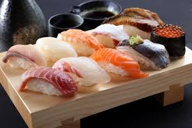
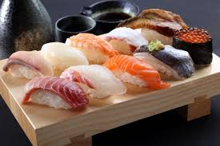

What are some popular and famous Japanese cusine?
There are dishes such as:
- Ramen
- Miso soup
- Sushi
- Takoyaki
- Tonkatsu
Pictures of ramen and takoyaki
 

Japanese cuisine has been shaped and evolved over a long period of time
Chick this to watch a video of a brief history of Japanese cuisine.
My favorites
These are my favorites! If you never had them, you should try!
- Sushi
- Udon
- Onigiri